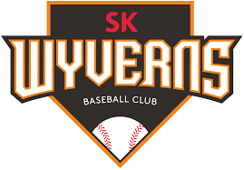

- 팀의 개요와 상세
- 팀의 특색
- 팀의 역사
- 홈구장
SK Wyverns

- SK 와이번스
- 창단 - 2000년 3월 31일 (19주년)
- 법인 설립 - 2000년 3월 22일 (19주년)
- 법인명 - ㈜에스케이와이번스
- 상장유무- 비상장기업
- 기업규모 - 대기업 자회사
- 구단 사무실 - 인천광역시 미추홀구 매소홀로 618 (문학동)
- 구단명 - SK 와이번스 (2000~)
- 지분율 - ㈜SK텔레콤 100%
- 연고지 - 인천광역시 (2000~)
- 구단주 - 최창원
- 사장 - 류준열
- 단장 - 손차훈
- 감독 - 염경엽
- 주장 - 최정
- 영구결번 - 26 박경완
- 홈 구장 - 숭의야구장 (2000~2001) / 인천 SK행복드림구장 (2002~)
- 2군 구장 - SK 퓨처스파크
- 마스코트 - 아테나와 와울

- 워드 마크